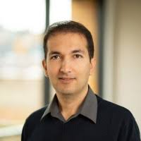
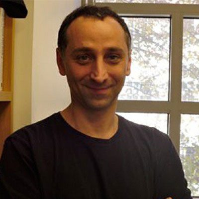
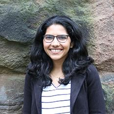

Invited Speakers
Chen Yu (University of Texas, Austin) is the Charles and Sarah Seay Regents Professor of the Department of Psychology, Central for Perceptual Systems, and Institute of Neural Science at the University of Texas at Austin. He is a fellow of the Cognitive Science Society and the Association of Psychological Science. He received the Robert L. Fantz Memorial Award from the American Psychological Foundation, the David Marr Prize from the Cognitive Science Society, and the ICIS Early Distinguished Contribution Award. He received several best paper awards from IEEE ICDL, Cognitive Science, and CVPR.

Roozbeh Mottaghi (FAIR, Meta) is a Senior Research Scientist Manager at FAIR. Prior to joining FAIR, he was the Research Manager at the Allen Institute for AI (AI2). He obtained his PhD in Computer Science in 2013 from the University of California, Los Angeles. After PhD, he joined the Computer Science Department at Stanford University as a post-doctoral researcher. His research mainly focuses on embodied AI, reasoning via perception, and learning via interaction, and his work on large-scale Embodied AI received the Outstanding Paper Award at NeurIPS 2022.

Dean Buonomano (University of California, Los Angeles) is a professor in the Departments of Neurobiology and Psychology, and a member of the Integrative Center for Learning and Memory at UCLA. He is a computational and experimental neuroscientist, and leading expert on neural dynamics and how the brain tells time. He received his bachelor’s degree from the University of São Paulo, Campinas in Brazil, and his doctoral degree from the University of Texas Health Science Center, Houston. Buonomano is the author of Brain Bugs: How the Brain’s Flaws Shape our Lives and Your Brain is a Time Machine: The Neuroscience and Physics of Time.

Tianyi Zhou (University of Maryland) is an Assistant Professor of Computer Science at the University of Maryland, College Park, and a member of UMIACS. He received a Ph.D. degree in computer science from the University of Washington. His recent works focus on curriculum learning, controllable and personalized AI models, human-AI alignment, and their applications on large language models, multi-modality models, and AIGC models. He has published ~100 papers at NeurIPS, ICML, ICLR, ACL, EMNLP, NAACL, CVPR, ICCV, KDD, AAAI, IJCAI, Machine Learning (Springer), IEEE TPAMI/TIP/TNNLS/TKDE, etc. He has served as an SPC member or area chair in AAAI, IJCAI, KDD, WACV, and ICPR.
Mark Wallace (Vanderbilt University) is the holder of the Louise B. McGavock Endowed Chair in Neuroscience at Vanderbilt University and has served as the Director of the Vanderbilt Brain Institute. He is a fellow of AAAS and the Association for Psychological Science (APS). His work focuses upon the neural architecture of multisensory integration and its development. He now directs an international consortium supported by Reality Labs Research (a division of Meta) studying perceptual and cognitive development in children from birth to young adulthood in immersive, naturalistic environments.

Priya Panda (Yale University) is an Assistant Professor in the Electrical Engineering Department at Yale University. She received her Ph.D. from Purdue University in 2019. During her internship at Intel Labs, she developed large-scale spiking neural network algorithms for benchmarking the Loihi chip. She is the recipient of the 2019 Amazon Research Award, 2022 Google Research Scholar Award, 2022 DARPA Riser Award, 2023 NSF CAREER Award. Her research interests lie in Neuromorphic Computing, Spiking Neural Networks, energy-efficient accelerators, and in-memory processing.